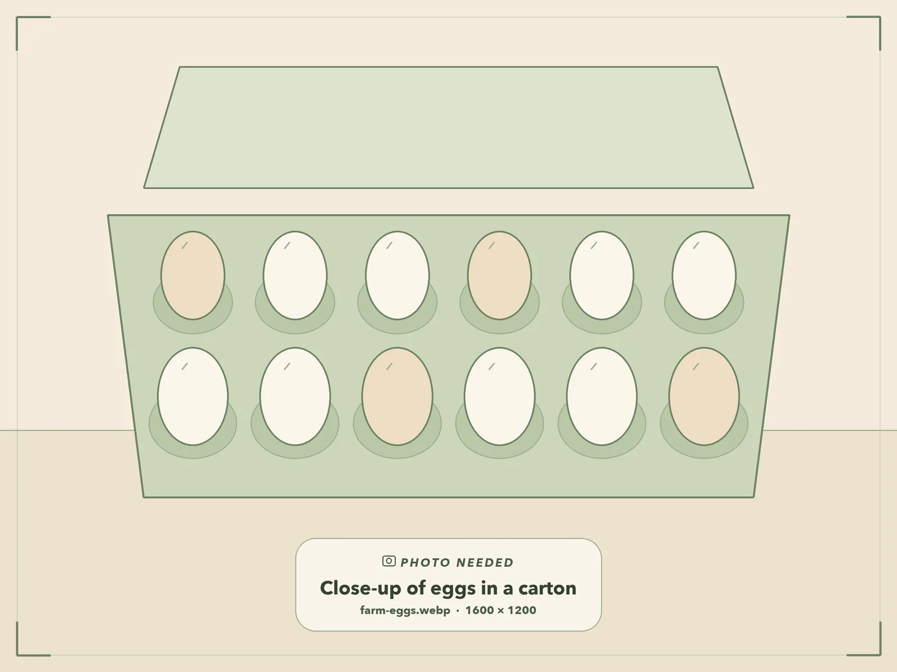

From our farm
Eggs
Eggs from the Obst family farm, available through local pickup and at select farmers markets.

From our farm
Lamb
Lamb from the Obst family farm, packaged and ready to take home. Available through local pickup and at select farmers markets.